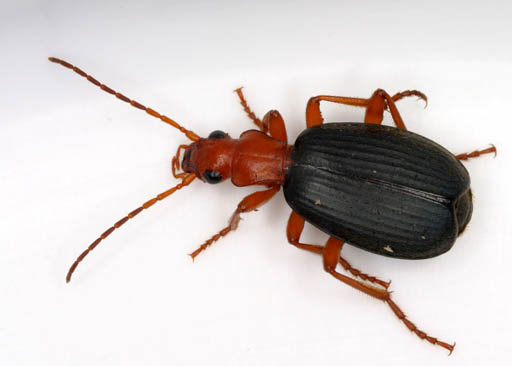
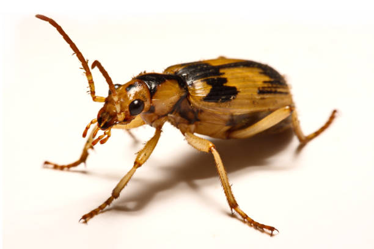
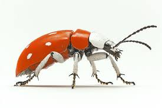
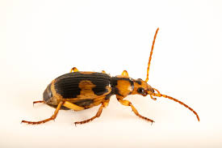

☀️
Bombardier beetles are among the most extraordinary insects in the animal kingdom, famous for their unique and highly effective defense mechanism. When threatened by predators such as ants, spiders, or frogs, these beetles can eject a hot, noxious chemical spray from the tip of their abdomen. The explosive reaction produces a popping sound and a cloud of irritating vapor, which is often enough to scare off or injure attackers.
This remarkable defense works through a specialized chemical chamber inside the beetle’s body. Two harmless chemicals—hydroquinones and hydrogen peroxide—are stored separately and mixed only when danger arises. Enzymes then trigger a rapid reaction that heats the mixture to near-boiling temperatures before it is expelled in precise bursts. The beetle can even aim the spray in different directions, making its defense both powerful and accurate.
Bombardier beetles are typically found in forests, grasslands, and along riverbanks, where they are active mainly at night. They feed on small insects and other invertebrates, acting as predators that help control pest populations. Despite their dramatic defenses, bombardier beetles are relatively small and otherwise unremarkable in appearance.
These beetles demonstrate the incredible adaptations insects can develop to survive in hostile environments. Their chemical weaponry remains one of the most impressive natural defenses found in the insect world



